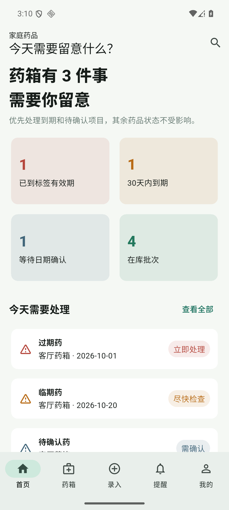
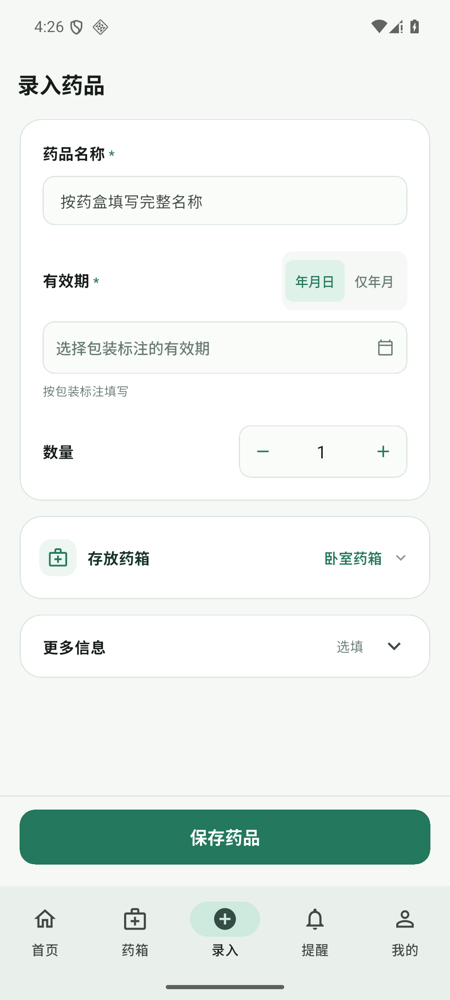
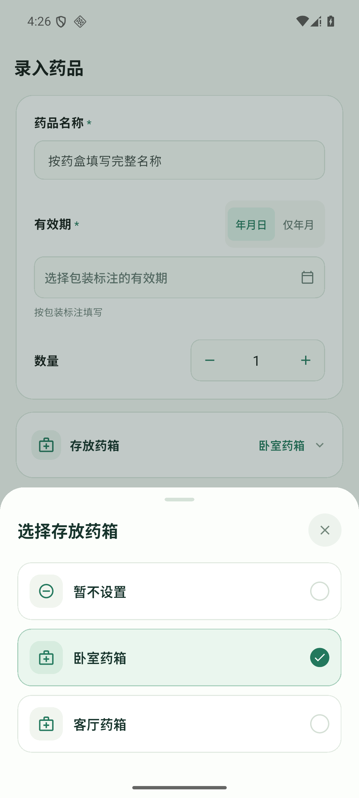

01
药放哪儿，不用猜
按客厅、卧室，或你自己的房间名字建立药箱。打开一个药箱，就能查看里面记录了哪些药。
药箱与存放位置一个替你记住药箱的小工具
还有哪些药，放在了哪里，什么时候到期。
记在安药箱里，用的时候少翻一会儿。

App 实际界面 · 截图为演示数据
不复杂，够用就好
围绕家里的药品，做好几件具体的小事。
按客厅、卧室，或你自己的房间名字建立药箱。打开一个药箱，就能查看里面记录了哪些药。
药箱与存放位置按包装填写有效期，区分已过期和即将到期。开启通知并正确设置提醒后，及时留意需要处理的药品。
有效期与本地提醒填好药名、数量和有效期，选择存放药箱，再保存。暂时不用的规格、批号和备注，收在更多信息里。
优先手动录入药箱在你手里，数据也有自己的位置。不注册也能使用本机管理；需要同账号多手机同步时，再选择账号云同步。
看看数据说明不是概念图，是现在的样子
这些是 App 实际运行截图，使用合成演示数据，不包含真实用户记录。
需要处理的记录，放在前面。

支持年月或年月日有效期。

选择自己的药箱，也可以暂不设置。
ANDROID · 公开内测
现在可以下载体验。它还在慢慢完善，
欢迎带着真实的日常问题来试一试。
在电脑上浏览？用手机扫一扫打开此页，下载 Android 安装包
GitHub 直接下载 APK · 无需注册账号
7a067e1055b13eb58904f35cbd32974faf3851d47dbcf609bd22819471081aa4从下载到使用
用 Android 手机打开本页，点击下载。核对来源后，由系统安装器确认；如有风险拦截，请停止安装，不要关闭系统安全保护。
在「药箱」里创建一个药箱，填写名称和存放房间。不用买硬件，也不用先注册账号。
从底栏「录入」填写药名、数量和包装有效期。如需到期通知，再按 App 提示开启权限并检查提醒状态。
已经安装过？请直接覆盖更新，不要先卸载。建议先在 App 中备份，并核对更新后的登录、药品和提醒。
可能想问的事
少一些误会，
再多一点安心。
当前提供最低系统要求为 Android 7.0+ 的 ARM64（arm64-v8a）安装包，不支持只有32位系统的手机。目前没有 iPhone/iOS 版本。
可以。药品录入、药箱管理、查看有效期等基础功能保存在本机，离线也能使用。需要同账号多手机同步时，再选择登录和账号云同步；云端能力需要网络。
还没有。当前版本优先做好手动录入；扫码、拍照/OCR和语音入口暂时隐藏，待识别和药品查询能力验证完善后再考虑开放。
不能作绝对保证。提醒依赖你填写的有效期、通知权限、提醒设置，以及手机系统的后台与电量管理。请检查 App 的提醒健康状态，并定期查看药箱和实际包装，不要把 App 当作唯一提醒来源。
不需要。软件可以独立使用，药箱硬件目前还在规划中，尚未完成或销售。网页没有硬件预售或购买入口。
当前内测包默认开启基础使用统计，提交随机安装标识、使用日期、版本和平台，用于了解安装活跃情况，不关联账号或药品正文。可以随时在 App 内关闭；关闭不影响药品管理。保留时间和云同步边界见隐私与内测说明。
可以。上方主要下载入口通过 GitHub 提供 APK；如果较慢，可以选择「百度网盘备用下载」，提取码为 1234，按网盘页面提示下载。网盘内容由作者手动维护，版本以文件名为准。已经安装 App 的用户，App 内更新仍通过 Gitee 下载，不需要改用网盘。
可以到本站 GitHub Issues反馈。该页面公开，请只说明手机型号、Android/App版本和错误提示，不要提交药品清单、账号资料、密码或验证码。若下载链接打不开，也可选择上方百度网盘备用入口。
先把软件做好。
让每个小药箱，都有条理一点。